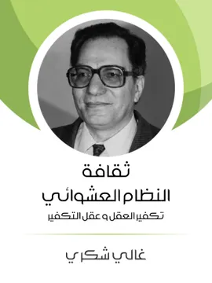

ثقافة النظام العشوائي: تكفير العقل وعقل التكفير

قراءة عربية أصلية محددة النطاق في الصفحات 15، 17 من ملف PDF المرتبط، وليست تلخيصا كاملا للكتاب. نناقش ما تدعمه هذه المقاطع فقط.
حتى لا يُقال إنا صمتنا في زمن الحوار
يوضح غالي شكري في مقدمته الأصلية لهذا الكتاب أن هذه المجموعة من الدراسات والمقالات كُتبت ونُشرت بين عامي 1993م و1994م في مجلة «القاهرة» وجريدة «الأهرام» ومجلة «الوطن العربي»، وقصد بهذا النشر الواسع قبل ضمها بين دفتي كتاب أن يشارك في المعارك الفكرية والسياسية الدائرة في وطنه مشاركة صريحة كاملة، حتى لا يُقال إنهم صمتوا في زمن الحوار وإنهم غابوا وكأنهم حاضرون، وحتى تصل كلمتهم إلى أوسع قطاعات الرأي العام. ويبرر تقديم الصفحات كما كتبها في المرة الأولى دون تغيير: ليس شهوة إبراء الذمة أمام التاريخ أو تسجيل المواقف، وإنما لأن تعدد المنابر لا يتيح للقارئ أن يحصل على الرؤية الكاملة والمنهج الموحد فيها جميعًا، ولأن معظم الدراسات كُتبت في الأصل فصولًا طويلة مسلسلة في حلقات، والسياق العام هو الذي يربط بين الكلمة الأولى والكلمة الأخيرة في تجانس واضح.
زاوية وحدود القراءة
قراءة في مقدمة المؤلف الأصلية للكتاب من الصفحات 15 إلى 17، وهي بقلم غالي شكري نفسه، لا تقديم الدكتور وائل غالي للأعمال الكاملة ولا مقدمته. ظروف النشر الأول كما سردها المؤلف. المداخل الستة للكتاب ومقالاته النقدية خارج نطاق المقروء.
الطبعة والقراءة
هذه النسخة من الكتاب صادرة ومتاحة مجانًا بموجب اتفاق قانوني بين مؤسسة هنداوي وأسرة السيد الدكتور غالي شكري.
تنزيل PDF المجاني ↓ القراءة والمصدر الرسمي ↗